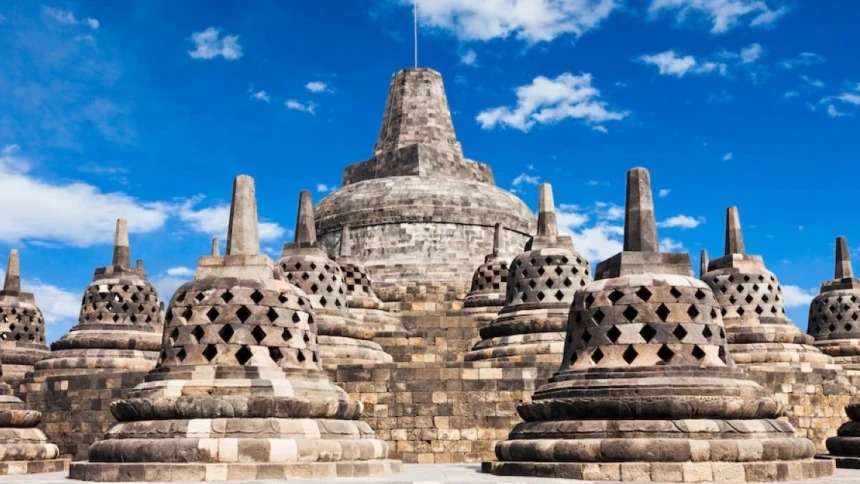
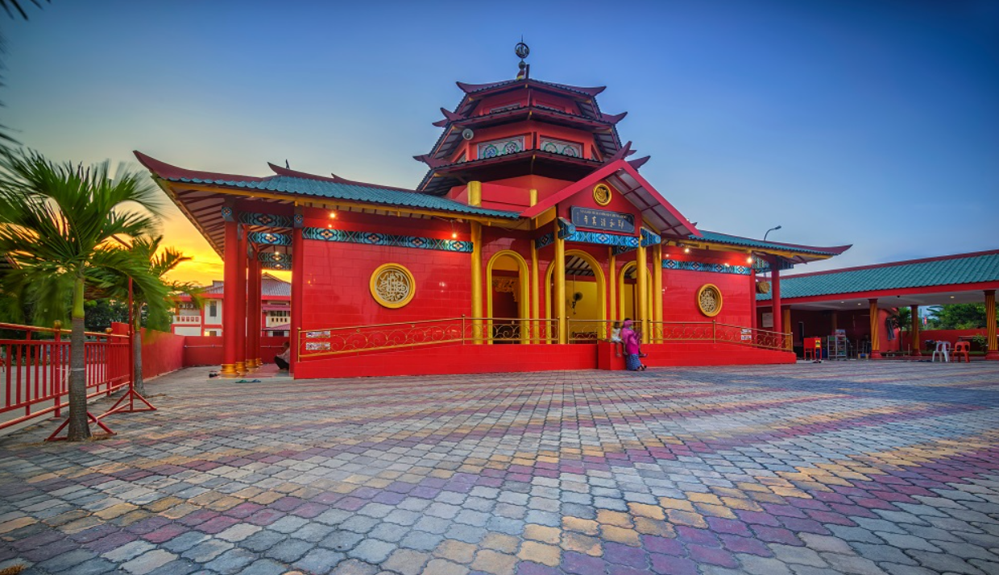

Indonesia, dengan kekayaan budaya dan sejarahnya yang panjang, memiliki lanskap arsitektur yang menakjubkan. Arsitektur di Indonesia tidak hanya berfungsi sebagai tempat tinggal atau bangunan, tetapi juga sebagai cerminan nilai-nilai budaya, kepercayaan, dan teknologi masyarakatnya. Dalam perjalanannya, arsitektur Indonesia mengalami akulturasi budaya, yaitu percampuran antara unsur-unsur budaya asli dengan unsur-unsur budaya asing. Akulturasi ini menghasilkan karya-karya arsitektur yang unik dan beragam, mencerminkan kekayaan budaya Indonesia.
1. Candi Borobudur
Candi Borobudur, candi Buddha terbesar di dunia, adalah mahakarya arsitektur yang terletak di Magelang, Jawa Tengah. Dibangun pada abad ke-9 oleh Wangsa Syailendra, candi ini memiliki arsitektur megah dengan stupa dan relief Buddha yang indah. Borobudur tidak hanya menjadi tempat ibadah, tetapi juga simbol toleransi dan keindahan keberagaman budaya. Arsitektur Borobudur yang megah dan detail mencerminkan kejeniusan arsitekturnya yang berkolaborasi dengan nilai-nilai budaya Buddha pada masanya.
2. Masjid Cheng Hoo
Masjid Cheng Ho Surabaya, juga dikenal sebagai Masjid Muhammad Cheng Ho Surabaya, adalah contoh nyata kolaborasi budaya antara Islam dan Tionghoa. Terletak di Surabaya, masjid ini memiliki desain yang unik, menyerupai kelenteng (rumah ibadah Tri Dharma). Masjid ini bukan hanya tempat ibadah, tetapi juga simbol toleransi dan keindahan keberagaman budaya di Indonesia. Arsitektur Masjid Cheng Ho yang unik ini menjadi daya tarik tersendiri bagi wisatawan yang ingin melihat langsung perpaduan budaya yang harmonis.
3. Masjid Agung Demak

Masjid Agung Demak, salah satu masjid tertua di Indonesia, adalah saksi bisu penyebaran Islam di Pulau Jawa. Dibangun oleh Wali Songo pada abad ke-15, masjid ini memiliki arsitektur yang unik, memadukan unsur budaya Jawa dan Persia. Masjid ini tidak hanya menjadi tempat ibadah, tetapi juga simbol sejarah dan budaya yang kaya. Arsitektur Masjid Agung Demak yang khas ini menjadi daya tarik bagi para pengunjung yang ingin mempelajari lebih lanjut tentang sejarah Islam di Indonesia
4. Tratag Siti Hinggil

Tratag Sitihinggil, yang berarti "tanah yang tinggi," adalah ruang publik bersejarah yang terletak di Yogyakarta. Dulu, tempat ini digunakan oleh Sultan untuk menyaksikan berbagai acara kerajaan. Arsitektur Tratag Sitihinggil yang unik mencerminkan kolaborasi antara budaya Jawa dan pengaruh dari luar. Tempat ini menjadi saksi bisu berbagai peristiwa penting dalam sejarah Yogyakarta.
5. Gereja Kristen Pniel PnielBlimbingsari

Gereja Kristen Pniel Blimbingsari di Bali adalah contoh kolaborasi budaya yang unik antara arsitektur Bali dan nilai-nilai Kekristenan. Bangunannya yang menyerupai wantilan, lengkap dengan ukiran Bali, candi kurung, dan bale kul-kul, menciptakan harmoni budaya yang memukau. Gereja ini menjadi simbol toleransi dan akulturasi budaya yang indah di Bali.